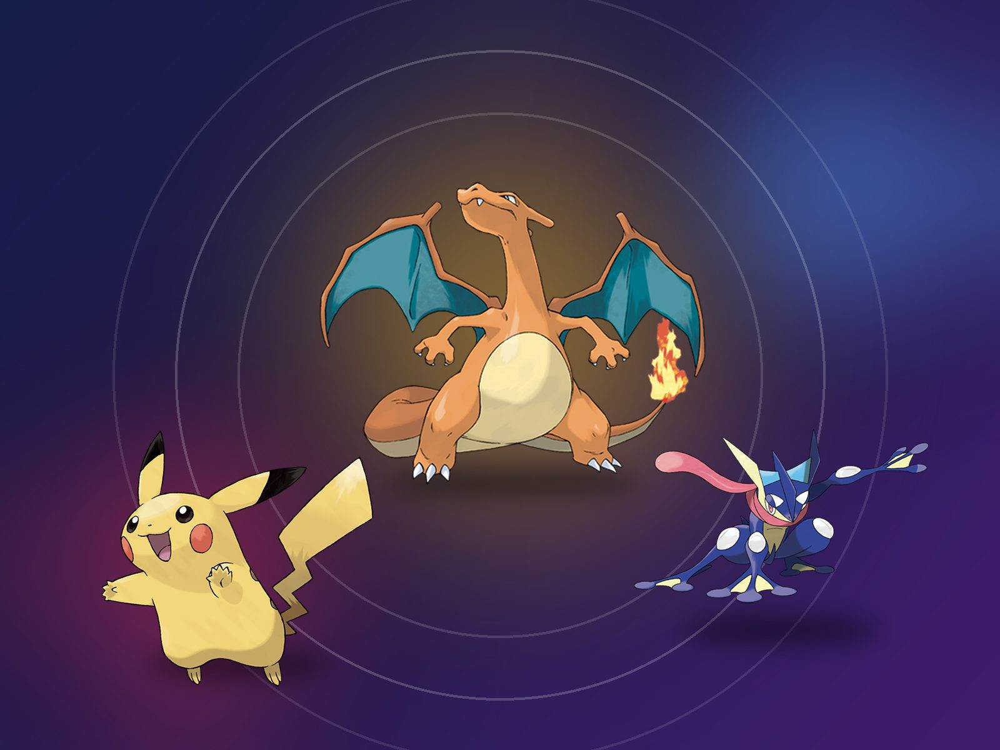

Mais de 1.300 pokémons em um só lugar
Encontre, compare e colecione seus pokémons favoritos
Explore a Pokédex completa com dados oficiais de HP, tipo, peso e altura. Busque pelo nome ou pelo tipo e guarde os escolhidos na sua coleção pessoal.
Explorar a galeria
O que você pode fazer aqui
A PokéColeção funciona como uma loja: você navega pela vitrine, escolhe os pokémons que mais gosta e eles vão para a sua coleção, como itens em um carrinho de compras.
-
Galeria de pokémons
Veja todos os pokémons da Pokédex em cards com imagem, HP, tipo, peso e altura. Busque pelo nome de um pokémon específico ou filtre por tipo, como fogo, água ou planta.
Ir para a galeria -
Coleção de favoritos
Clique em Favoritar e o pokémon entra na sua coleção. O contador no topo mostra quantos itens você já escolheu, e tudo fica salvo no seu navegador.
Ver meus favoritos -
Resumo da coleção
Como o resumo de um carrinho, a página de favoritos calcula a média de peso, altura e HP dos escolhidos e lista os tipos presentes na sua coleção.
Ver o resumo